betaPrior <- function(P, LI, LS, CONF = 0.80) {
## P = proporção ("estimativa" pontual)
## LI, LS = limite inferior e superior para proporção
## CONF = confiança do intervalo descritvo
fobj <- function(alpha) {
beta <- (alpha * (1 - P) - 1 + 2 * P)/P
prob <- diff(pbeta(q = c(LI, LS), alpha, beta))
(prob - CONF)^2
}
alpha <- optimize(fobj, c(1, 100))$minimum
beta <- (alpha * (1 - P) - 1 + 2 * P)/P
return(list(alpha = alpha, beta = beta))
}
(priori <- betaPrior(0.62, 0.3, 0.7, 0.8))## $alpha
## [1] 12.7498
##
## $beta
## [1] 8.201492curve(dbeta(x, priori$alpha, priori$beta), from = 0, to = 1)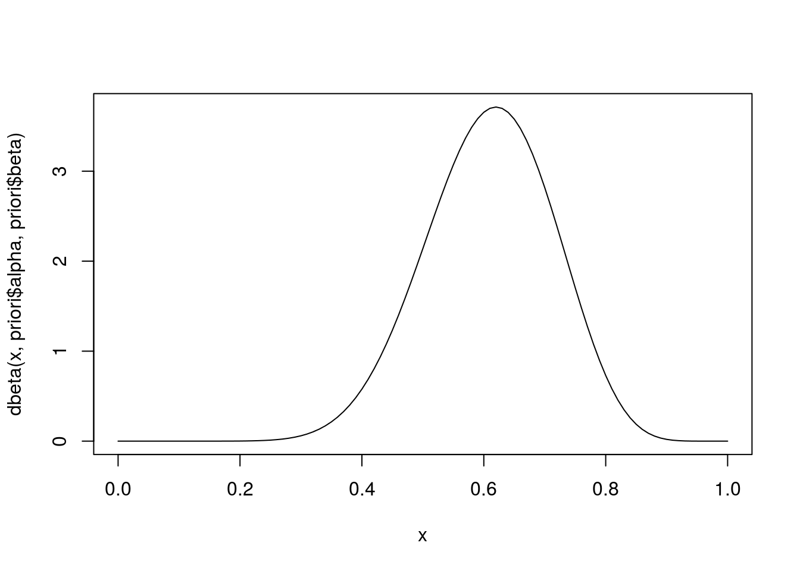
y <- 24 ## Numero de eleitores com intenção de votar no atual prefeito
n <- 80 ## Numero de eleitores consultados
curve(dbinom(x = y, size = n, prob = x))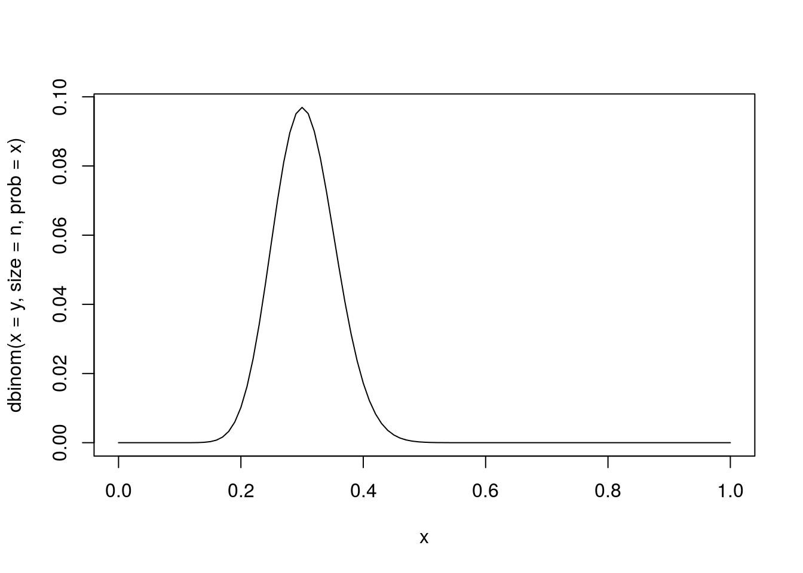
## Normalizando (fazendo com que a area abaixo da curva seja 1)
## i) Analiticamente percebe-se que a verossimilhança normalizada segue
## uma distribuição beta com parametros alpha = y+1 e beta = n-y+1
curve(dbeta(x, shape1 = y + 1, shape2 = n - y + 1), from = 0, to = 1)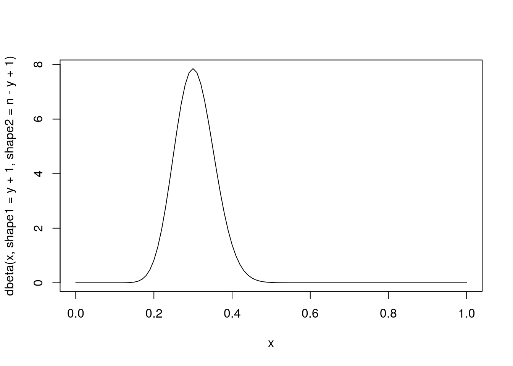
## ii) Numericamente pode-se integrar a função (para integração também
## existem vários métodos) e dividir a verossimilhança por esta
## constante
cte <- integrate(function(x) dbinom(x = y, size = n, prob = x),
lower = 0, upper = 1)$value
curve((1/cte) * dbinom(x = y, size = n, prob = x), from = 0, to = 1)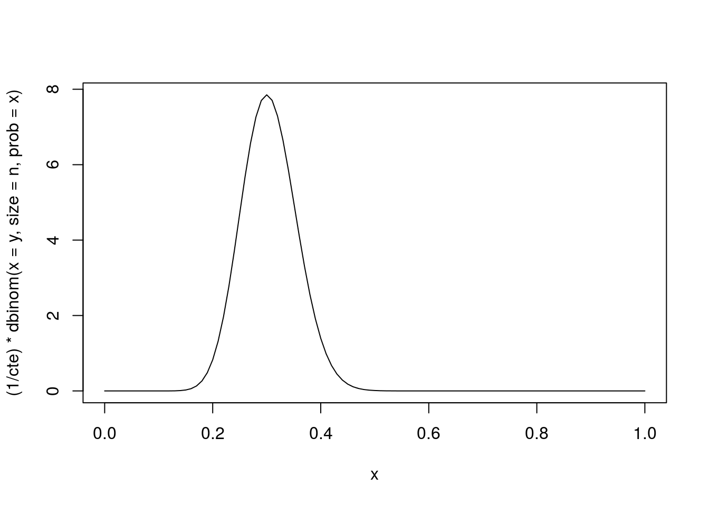
Obtendo a posteriori (aqui é que entram os diversos métodos da inferência bayesiana)
kernelPosterior <- function(theta, n, y, priori, log = TRUE) {
dens <- (y + priori$alpha - 1) * log(theta) +
(n - y + priori$beta - 1) * log(1 - theta)
if(log) return(dens)
else return(exp(dens))
}post <- list(alpha = y + priori$alpha, beta = n - y + priori$beta)
curve(dbeta(x, post$alpha, post$beta), from = 0, to = 1)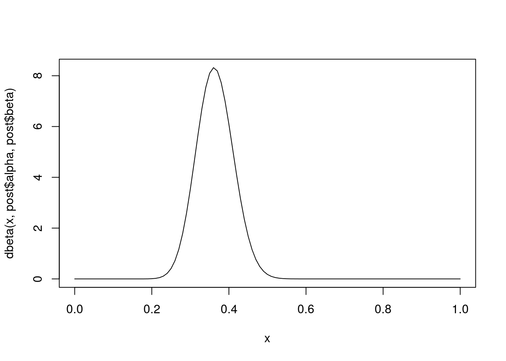
par(lwd = 2, bty = "n")
with(post, curve(dbeta(x, alpha, beta), from = 0, to = 1))
with(priori, curve(dbeta(x, alpha, beta), add = TRUE, lty = 3, col = 4))
curve(dbeta(x, y + 1, n - y + 1), add = TRUE, lty = 2, col = 2)
legend("topright",
legend = c("Posteriori", "Verossimilhança", "Priori"),
col = c(1, 2, 4),
lty = 1:3, bty = "n")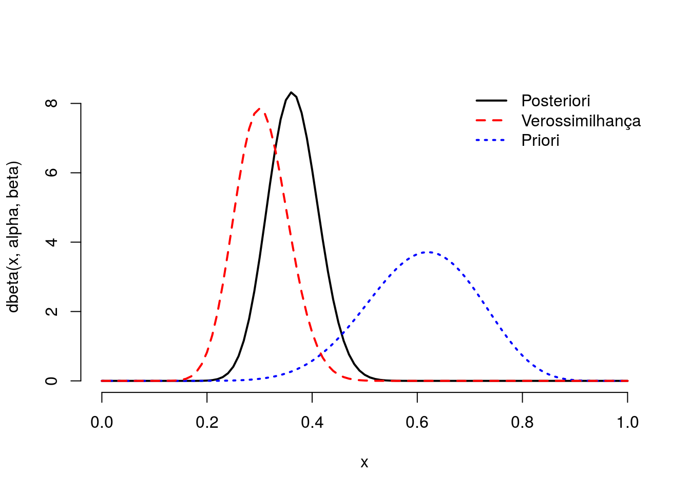
seqTheta <- seq(0, 1, length.out = 101)
pesoTheta <- kernelPosterior(seqTheta, n, y, priori, log = FALSE)
probTheta <- pesoTheta / sum(pesoTheta)
amostra <- sample(x = seqTheta, size = 1e3, prob = probTheta,
replace = TRUE)
densTheta <- density(amostra)
hist(amostra, prob = TRUE, border = "white", col = "lightgray")
rug(amostra, col = 4)
lines(density(amostra), col = 4, lty = 2, lwd = 2)
with(post, curve(dbeta(x, alpha, beta), add = TRUE, lwd = 2))
legend("topright",
legend = c("Posteriori Analítica", "Posteriori Aproximada"),
col = c(1, 4), lty = 1:2, lwd = 2, bty = "n")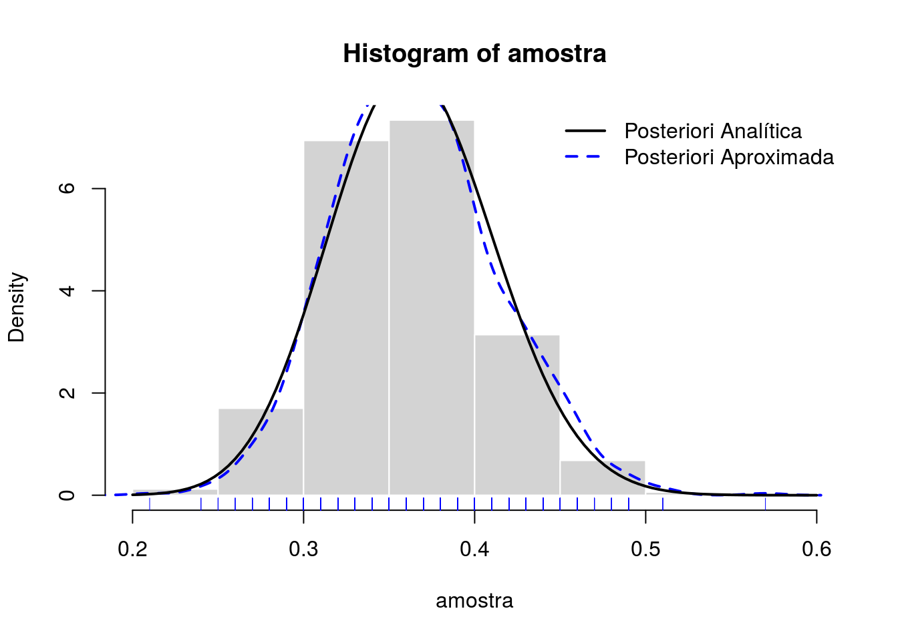
AccRej <- function(n, fx, gx, M, trace = FALSE) {
x <- vector("numeric", length = n)
va <- iter <- 1
while (va <= n) {
y <- gx(1)
w <- fx(y) / fx(M)
u <- runif(1)
if (u <= w) {
x[va] <- y
va <- va + 1
}
if (trace) print(round(c(y, w, u, u<w), 4))
iter <- iter + 1
}
return(list(x = x, "Tentativas" = iter, "Taxa de aceitação" = va/iter))
}
amostra <- AccRej(
n = 1000,
fx = function(x) kernelPosterior(x, n, y, priori, log = FALSE),
gx = runif,
M = with(post, (alpha - 1) / (alpha + beta - 2)),
trace = FALSE)
plot(amostra$x, type = "l", ylim = c(0, 1))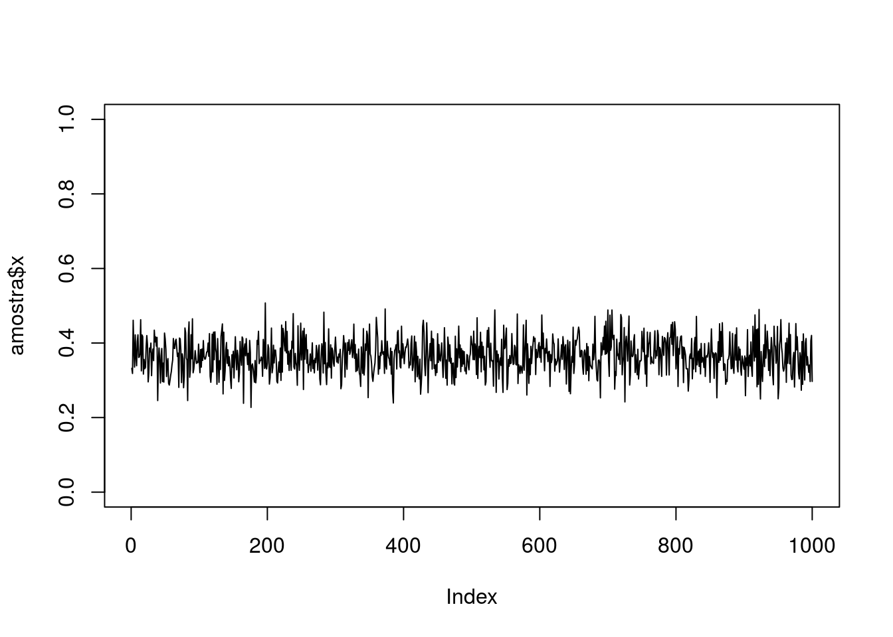
dens <- density(amostra$x)
hist(amostra$x, prob = TRUE,
xlim = c(0, 1), ylim = extendrange(dens$y, f = 0.05),
border = "white", col = "lightgray")
rug(amostra$x, col = 4)
lines(dens, col = 4, lty = 2, lwd = 2)
with(post, curve(dbeta(x, alpha, beta), add = TRUE, lwd = 2))
legend("topright",
legend = c("Posteriori Analítica", "Posteriori Aproximada"),
col = c(1, 4), lty = 1:2, lwd = 2, bty = "n")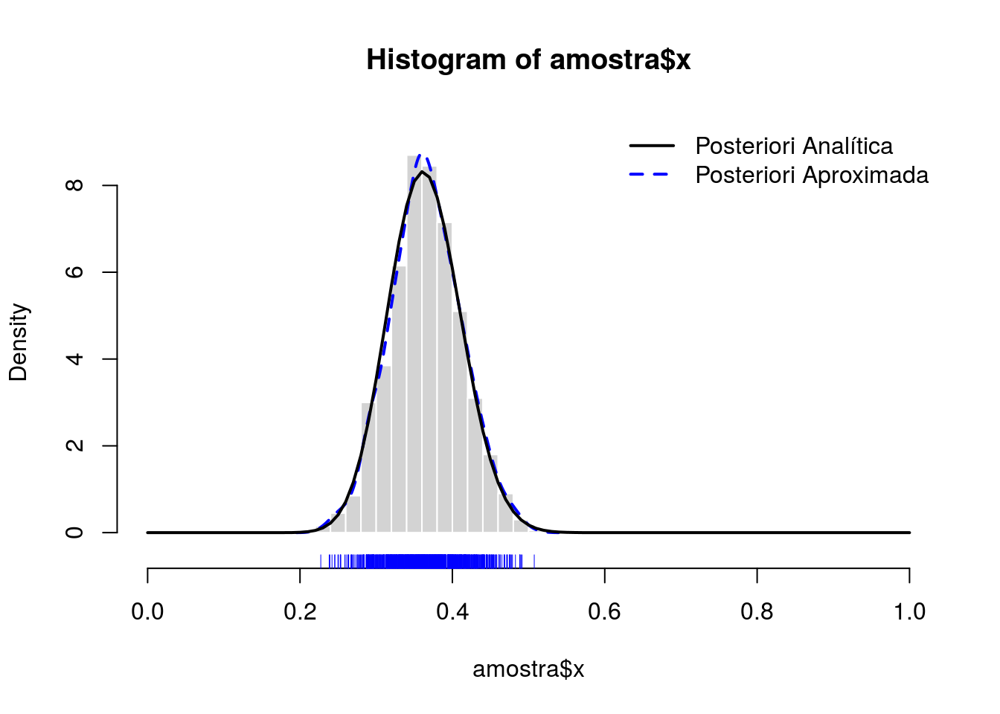
MCMC <- function(n, fx, gx = "unif", step, trace = FALSE) {
x <- vector("numeric", length = n)
va <- iter <- 1
y0 <- 0.5
while (va <= n) {
min <- max(0, y0 - step)
max <- min(1, y0 + step)
if (gx == "unif") {
y1 <- runif(1, min = min, max = max)
}
if (gx == "triangular") {
if (!require(triangle, quietly = T)) {
stop("Pacote triangle necessário. Instale-o")
}
y1 <- rtriangle(1, a = min, b = max)
}
w <- fx(y1) / fx(y0)
u <- runif(1)
if (u <= w) {
x[va] <- y1
va <- va + 1
y0 <- y1
}
iter <- iter + 1
if (trace) print(round(c(y1, w, u), 3))
## if (trace) print(round(c(y1, x), 3))
}
return(list(x = x, "Tentativas" = iter, "Taxa de aceitação" = va/iter))
}
amostra <- MCMC(
n = 1000,
fx = function(x) kernelPosterior(x, n, y, priori, log = FALSE),
gx = "triangular",
step = 0.05,
trace = FALSE)
plot(amostra$x, type = "l", ylim = c(0, 1))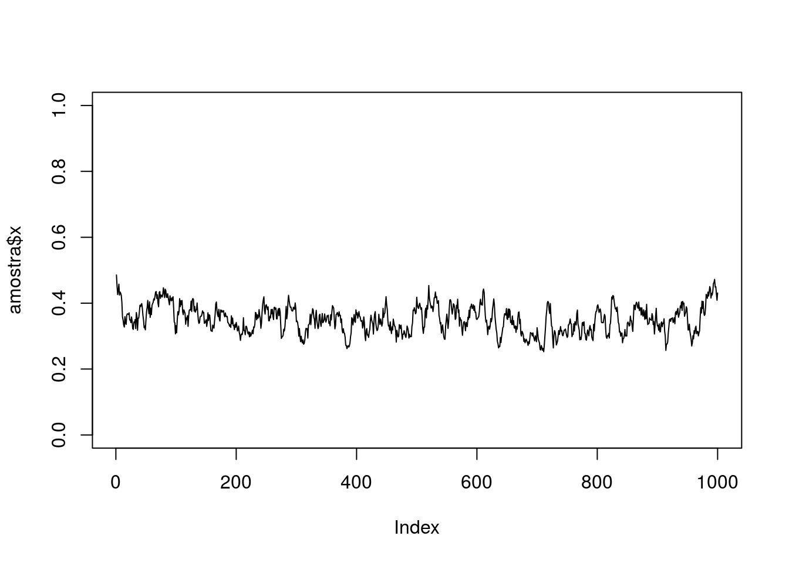
dens <- density(amostra$x)
hist(amostra$x, prob = TRUE,
xlim = c(0, 1), ylim = extendrange(dens$y, f = 0.05),
border = "white", col = "lightgray")
rug(amostra$x, col = 4)
lines(dens, col = 4, lty = 2, lwd = 2)
with(post, curve(dbeta(x, alpha, beta), add = TRUE, lwd = 2))
legend("topright",
legend = c("Posteriori Analítica", "Posteriori Aproximada"),
col = c(1, 4), lty = 1:2, lwd = 2, bty = "n")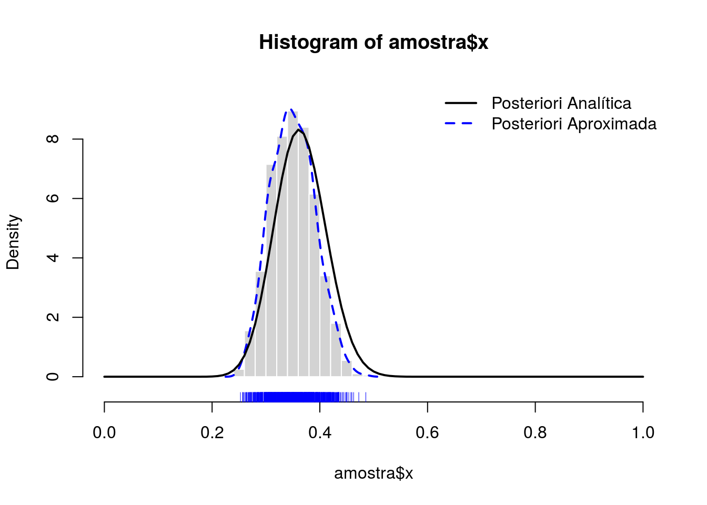